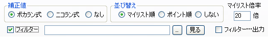

フィルター機能は、タグ検索、ランキング解析などのリスト作成時に、設定した条件の動画を除外する機能です。
動画IDを指定した除外、タイトルやタグのキーワードによる除外などができます。
フィルターはテキストファイルで作成します。
フィルター見本2 （指定したキーワードを含まないタイトルの動画を除外する）
フィルター見本3 （指定したキーワードを含むタイトルの動画を除外、さらに指定したタグを含まない動画を除外する）
// ← 行の先頭に // を書くと、その行が無視されます（コメント等が書けます）。
| [ng video id] | 指定した動画IDを持つ動画を除外します |
| [pickup video id] | 指定した動画IDを持たない動画を除外します |
| [ng title] | 指定したキーワードを1つでも含むタイトルを持つ動画を除外します |
| [pickup title] | 指定したキーワードを1つも含まないタイトルの動画を除外します |
| [ng tag] | 指定したタグを1つでも持つ動画を除外します |
| [pickup tag] | 指定したタグを1つも持たない動画を除外します （タグを取得していない場合も除外されることに注意） |
| [ng submit_date] | （Ver 1.50 から）動画投稿日が指定した範囲に入る動画を除外します |
| [pickup submit_date] | （Ver 1.50 から）動画投稿日が指定した範囲に入らない動画を除外します |
| [ng view] | （Ver 1.50 から）再生数が指定した範囲に入る動画を除外します |
| [pickup view] | （Ver 1.50 から）再生数が指定した範囲に入らない動画を除外します |
| [ng comment] | （Ver 1.50 から）コメント数が指定した範囲に入る動画を除外します |
| [pickup comment] | （Ver 1.50 から）コメント数が指定した範囲に入らない動画を除外します |
| [ng mylist] | （Ver 1.50 から）マイリスト数が指定した範囲に入る動画を除外します |
| [pickup mylist] | （Ver 1.50 から）マイリスト数が指定した範囲に入らない動画を除外します |

フィルターの影響範囲はランクファイルを出力するすべての操作に及びます。
「再計算・並べ替え・フィルタリング」によって既存のリストをフィルタリングしたリストを出力することができます。
「フィルター…出力」にチェックを入れると、除外された動画のリストを出力することができます。 ファイル名は「出力ファイル名_filter.拡張子」になります（例：出力ファイル名が rank.txt なら rank_filter.txt）。_filter ファイルは強制上書きされますのでご注意ください。
「テキストボックスへ出力」を選択している場合は _filter ファイルは出力できません。
[ng submit_date] では動画の投稿日による除外指定ができます。
[ng submit_date] 2008/01/02 12:34:56, 2008/06/30 12:34:56 2008/07/02 00:00:00, 2008/07/03 00:00:00
上のように書くと、投稿日が 2008/01/02 12:34:56～2008/06/30 12:34:56 と、2008/07/02 00:00:00～2008/07/03 00:00:00 の動画が除外されます。 [pickup submit_date] では逆にこの範囲にある動画以外が除外されます。
どちらか一方は省略可能です。
[ng submit_date] , 2008/07/03 00:00:00
と書くと 2008/07/03 00:00:00 までの動画が除外されます。
[ng view] では動画の再生数による除外指定ができます。
[ng view] 100, 200 1000,
上のように書くと、再生数が 100～200と、1000以上の動画が除外されます。 [pickup submit_date] では逆にこの範囲にある動画以外が除外されます。 コメント数は[ng comment]、[pickup comment]、マイリスト数は[ng mylist]、[pickup mylist] が使えます。